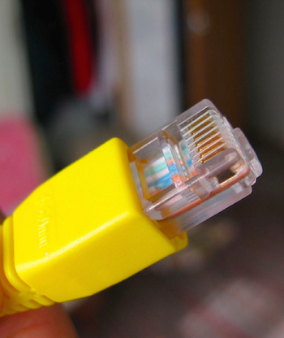
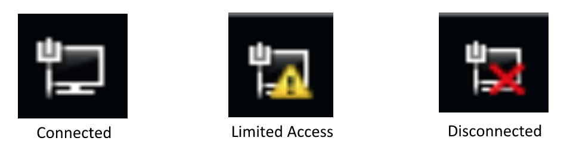

PCH 11 Fiber-Optic-Cable(光纖電纜) <<
Previous Next >> PCH 11 Coaxial-Cable(同軸電纜)
PCH 11 Twisted-Pair-Cable(雙絞線電纜)
learning objectives/學習目標
1.Identify types of network cables and connectors.
識別網絡電纜和連接器的類型。
2.Categorize characteristics of connectors and cabling.
START
While fiber-optic cable is great for its speed, distance, and security, it hasn’t yet become commonplace in most networks. Instead, we are still using the same type of cabling we have been using for the past two to three decades — twisted pair. Twisted pair cable is the most popular physical LAN media in the world today. Each cable contains four pairs of individually insulated strands of copper wire. Each pair is twisted together to minimize the amount of electromagnetic interference (EMI). The more twists there are in the cable, the less EMI there will be. Twisted pair cable is broken up into two types: unshielded twisted pair (UTP) and shielded twisted pair (STP).
儘管光纜在速度、距離和安全性方面都非常出色，但在大多數網絡中還尚未普及。
相反的，我們仍在使用過去兩到三十年來一直使用的相同類型的電纜-雙絞線電纜。
雙絞線電纜是當今世界上最流行的物理媒介。每條電纜包含四對獨立絕緣的銅線。
每對絞合在一起以最大程度地減少電磁干擾（EMI）。電纜中的扭曲越多，EMI越小。
雙絞線分為兩種類型：非屏蔽雙絞線（UTP）和屏蔽雙絞線（STP）。
光纖連接器

Shielded twisted pair cable is built very similarly to unshielded twisted pair, except that the pairs of wires are also surrounded by a metallic shielding (like foil). This outer foil shielding minimizes the EMI to which the cable is exposed. This increases the security and reliability of the cable. Unfortunately, however, this also increases the cost of the cable, so it is typically used only in high-production environments where the extra security is worth the extra cost.
屏蔽雙絞線電纜的構造與非屏蔽雙絞線非常相似，但不同的是，成對的電線也被金屬屏蔽層（如金屬箔）圍繞。外部的金屬箔屏蔽層可最大程度地減少電纜所遭受的電磁干擾。這增加了電纜的安全性和可靠性。但是，不幸的是，這也增加了電纜的成本，因此通常僅在高生產環境中使用，在這種情況下，額外的安全性值得額外的成本。
The more common type of cabling is unshielded twisted pair cable. Instead of using extra shielding, this cable relies on the twisting of its copper pairs to minimize the effects of EMI. Each twisted pair is twisted to insulate itself from the other pairs, and because there is no additional shielding, it is available at a lower cost than STP. Therefore, UTP is the most common media of choice for small office, home office, residential, and many commercial networks.
電纜中最常見的類型是非屏蔽雙絞線電纜。該電纜不使用額外的屏蔽，而是依靠其銅線對的絞合來最大程度地減小電磁干擾的影響。每個雙絞線都經過絞合，以使其自身與其他雙絞線絕緣，並且由於沒有額外的屏蔽，因此可以以比屏蔽雙絞線電纜更低的成本獲得。因此，非屏蔽雙絞線電纜是小型辦公室，家庭辦公室，住宅和許多商業網絡中最常見的選擇媒介。
Unsheathed twisted pair cable(非屏蔽雙絞電纜)

Categorizing Twisted Pair Cable(分類雙絞線電纜)
Twisted pair cable is categorized based on a category (cat) number. For example, cat 3, or category 3, is the oldest type of cable that we use. It was introduced back in the 1980s and 1990s for use in the first star topologies. The maximum throughput or bandwidth of cat 3 cabling is only 10 Mbps (megabits per second). The cat 3, like all twisted pair cabling, cannot go farther than 100 meters without using a repeater, switch, or active hub to amplify the signal. This limited distance is attributable to the copper wiring in these cables. As the signal travels over the copper wire, the natural resistance to the wire decreases the signal’s strength, and it eventually becomes too weak for the distant end to receive. For this reason, there is a 100 meter limitation when building and designing a twisted pair network.
雙絞線電纜根據類別編號進行分類。例如,3類電纜（或類別3）是我們使用的最古老的電纜類型。它是在1980年代和1990年代引入的，用於第一批星型網。3類電纜的最大傳輸量或帶寬僅為10 Mbps（兆位/秒）。與所有雙絞線電纜一樣，如果不使用中繼器，交換機或有源集線器來放大信號，則3類電纜不能走超過100米。這種有限的距離歸因於這些電纜中的銅線。當信號在銅線上傳輸時，導線的電阻會降低信號的強度，最終變得太弱，無法接收到遠端。因此，在構建和設計雙絞線網絡時存在100米的長度限制。
Cat 5(5類雙膠線電纜)
Cat 5 cables were an improvement on the older cat 3 cables and contain more twists, giving them more shielding from EMI and a maximum bandwidth of 100 Mbps. Cat 5e, or cat 5 enhanced, increased the speed of the maximum throughput to one Gbps, or 1000 Mbps, and became a gap filler until cat 6 cabling became commonplace.
5類雙膠線電纜是對較舊的3類電纜的改進，並包含更多的絞合線，從而使它們具有更大的電磁干擾屏蔽能力，最大帶寬為100 Mbps。 Cat 5e或5類雙絞線電纜增強後，將最大吞吐量的速度提高到1 Gbps或1000 Mbps，並成為了過度品，直到6類雙絞線電纜變得司空見慣。
Cat 6a overcomes the 37-55 meter limitation of cat 6 when used in 10GBaseT. Cat 7, the newest standard, is shielded and provides connections up to 10 Gbps with a maximum distance of 100 meters. “Cat 7 and cat 7a cabling will be used for backbone connections between servers within a data center” and “provide an alternative to using fiber-optic cabling within the data center”
當在10Gb乙太網路中使用時，超六類雙膠線電纜克服了6類雙膠線電纜的37-55米的限制。最新標準7類雙膠線電纜被屏蔽，並提供高達10 Gbps的連接，最大距離為100米。7類雙膠線電纜和超7類雙膠線電纜將用於數據中心內服務器之間的骨干連接，並提供在數據中心內使用光纖電纜的替代方案。
All cable categories up to cat 5e and cat 6a have a maximum distance of 100 meters. When used in 10GBaseT, the maximum distance for cat 6 is 55 meters. Cat 7 is shielded and exceeds the 100 meter limit. As the category of the cable increases, so do the number of twists per inch and the frequency range, allowing for more data and improved protection against EMI. Best practice for copper cabling is not to run cable lengths to the maximum because attenuation will reduce data capacity.
直至Cat 5e和Cat 6a為止的所有電纜類別的最大距離為100米。在10GBaseT中使用時，Cat 6的最大距離為55米。 Cat 7被屏蔽並超過100米的限制。隨著電纜類別的增加，每英寸的捻數和頻率範圍也會增加，從而可以提供更多的數據並改善對電磁脈衝的保護。銅纜佈線的最佳實踐是不要使電纜長度變大，因為會衰減降低數據的容量。
Twisted Pair Connectors(雙絞線連接器)
Twisted pair cables come with three main types of connectors. The first is the RJ-45 connector, which is an eight-pin connector used in Ethernet networks. Even though most Ethernet networks use only four pins, the RJ-45 provides eight pins for future use and capabilities. The first four pins are used to transmit (two pins) and receive (two pins).
雙絞線電纜帶有三種主要類型的連接器。第一個是RJ-45連接器，它是以太網網絡中使用的八針連接器。即使大多數以太網僅使用四個引腳，RJ-45仍提供八個引腳以供將來使用。前四個引腳用於發送（兩個引腳）和接收（兩個引腳）。
The RJ-11 connector is used in the standard telephone system. The RJ-11 is a six-pin connector, but commonly only two pins are used for a telephone (transmit and receive). If you have a two-line phone, then four pins are used: two pins to transmit and two pins to receive.
RJ-11連接器用於標準電話系統。 RJ-11是一個六針連接器，但電話通常僅使用兩個針腳（用於發送和接收）。如果您有兩線電話，則會使用四個引腳：兩個引腳用於發送，兩個引腳用於接收。
Finally, the DB-9 connector is used for RS-232 signals. This connector looks like a standard serial connector. It is used commonly for asynchronous serial communications, like connecting to an external modem. In modern networks, you will see this type of connector on a “rollover cable.” A rollover cable has a DB-9 on one side (which is connected to your laptop’s serial port), and an RJ-45 connector on the other side (which is used to connect to Cisco routers and switches to do administration tasks).
最後，DB-9連接器用於RS-232信號。該連接器看起來像標準的串行連接器。它通常用於異步串行通信，例如連接到外部調製解調器。在現代網絡中，您將在“翻轉電纜”上看到這種類型的連接器。翻轉電纜的一側為DB-9（連接到筆記本電腦的串行端口），另一側為RJ-45連接器（用於連接到Cisco路由器和交換機以執行管理任務）。
A straight-through cable is a type of twisted pair cable that is used in local area networks to connect a computer to a network hub, such as a router. This type of cable is also sometimes called a patch cable. Both ends of the cable have an identical pinout, hence the name “straight-through.” A crossover cable switches the pinouts of the two ends of the cable, making the transmit and receive pins alternate on the two ends. This allows two workstations to connect directly to each other without the need for a hub, switch, or router.
直通電纜是雙絞線電纜的一種，在局域網中用於將計算機連接到網絡集線器（例如路由器）。這種類型的電纜有時也稱為跳線。電纜的兩端都具有相同的引出線，因此被稱為“直通”。交叉電纜切換電纜兩端的引腳分配，使發送和接收引腳在兩端交替。這允許兩個工作站直接相互連接，而無需集線器 、交換機或路由器。
PCH 11 Fiber-Optic-Cable(光纖電纜) <<
Previous Next >> PCH 11 Coaxial-Cable(同軸電纜)